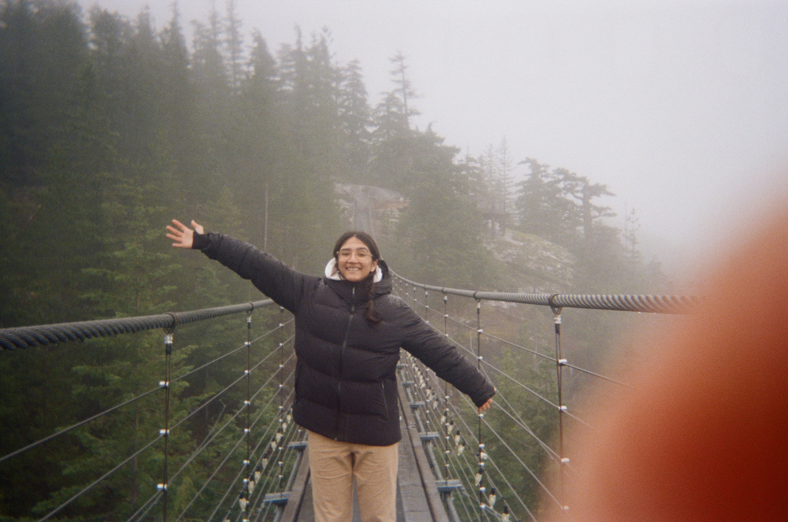

 <
<
Liza Mehta
Hey! I’m Liza, a multidisciplinary designer studying Global Business and Digital Arts at the University of Waterloo. I find joy in storytelling through my work. My decisions are rooted in creativity and a desire to make an impact. I specialize in UX, branding, film, and creating communities. I enjoy projects that push me outside of my comfort zone, challenge conventional thinking, and create an impact.